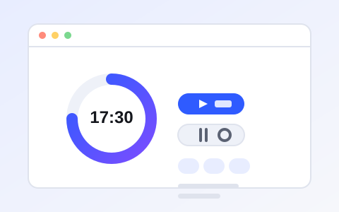
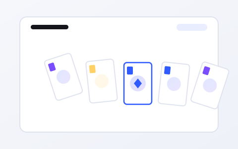
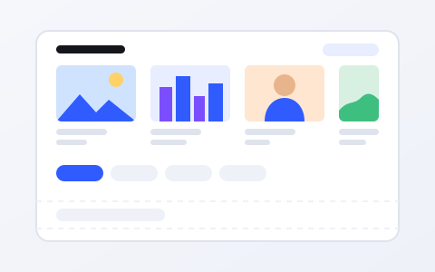
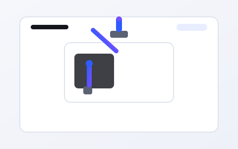

Study Timer
A countdown timer for revision sessions. I built it because every timer app I tried wanted an account. It stores your last session length in local storage and does nothing else.
Projects
I keep this list short on purpose. Everything here runs, even if some of it only runs well enough for me.
Showing all 4 projects.

A countdown timer for revision sessions. I built it because every timer app I tried wanted an account. It stores your last session length in local storage and does nothing else.

An animated comparison of four sorting algorithms, written for a data structures assignment. Watching bubble sort lose to merge sort is far more convincing than a complexity table.

A one-page log of every roll of film I have shot, with the camera, the stock and a note about what went wrong. Responsive CSS grid does all the work; there is no backend at all.

An experiment rather than a product: I removed all mouse styling from a page and tried to use it with the keyboard alone. The write-up of what broke is more useful than the page itself, and it changed how I write markup.
Nothing in this category yet — check back after the next holiday.
A finished tiny project teaches more than an unfinished ambitious one. I now deliberately shrink scope until finishing is realistic.
Most of my early time was spent guessing. Reading the actual message, all the way through, is faster every single time.
Committing at each working step means I can always get back to the last version that behaved. The history of this site is proof of that habit.